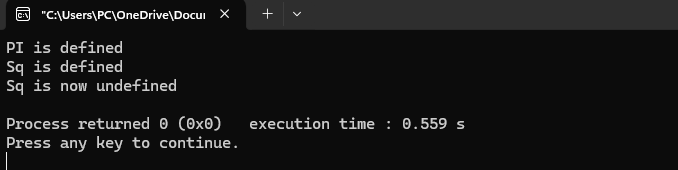

#include < stdio.h >
int main() {
// Keywords
int a = 5;
float b = 3.14;
// Identifiers
int sum = a + (int)b;
// Constants
const int MAX = 100;
// String literals
char str[] = "Hello, World!";
// Operators
int result = a * MAX;
printf("Sum: %d\n", sum);
printf("String: %s\n", str);
printf("Result: %d\n", result);
return 0;
}
Output
